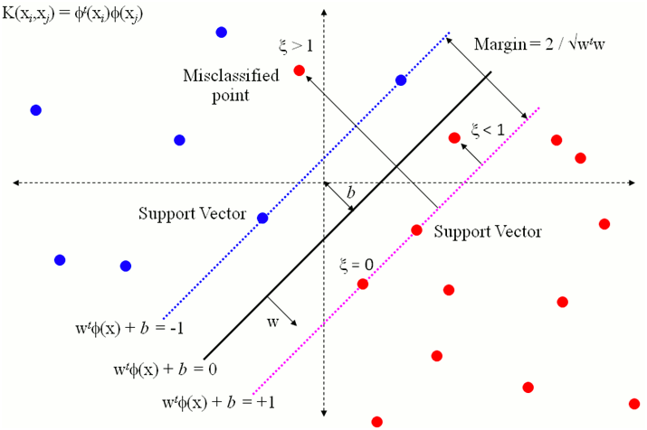
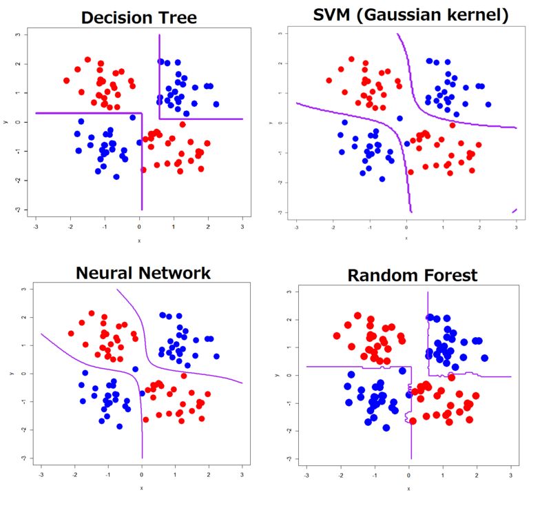

Applications of Machine Learning in Parkinson's Diagnosis
Max Wang
<u5584091@anu.edu.au>
View Online: maxwg.github.io/presentation
Check For Parkinson's: maxwg.github.io/diagnosePD
Supervised by:
Dr Deborah Apthorp (ANU CBME & CECS)
Dr Hanna Suominen (ANU CECS & DATA61)
Parkinson’s Disease (PD) is a degenerative neurological disorder that affects an estimated 53 million people worldwide 1, 2
“FOR PATIENTS, PARKINSON'S DISEASE
IS NOT A TIME-NEUTRAL SITUATION,
IT'S A TICKING CLOCK” - MICHAEL J. FOX
Symptoms
| Motion | Speech | Non-Motor |
|---|---|---|
|
|
|
Symptoms
| Motion | Speech | Non-Motor |
|---|---|---|
|
|
|
Most PD patients suffer from a subset of these symptoms
- Misdiagnosis rates are high. Studies range from 9-34%3,4,5,6
- Diagnosis is difficult in early stages of the disease as symptoms have not fully manifested 3
- There are a number of diseases with similar symptoms: 7
- Essential Tremor
- Dystonia
- Multiple Systems Atrophy
- Supranuclear Palsy
- Huntingtons Disease and more
What can I help you with?
Say "aaaaah" into the microphone

What can I help you with?
Say "aaaaah" into the microphone
It is highly unlikely you have Parkinson's Disease.
Prior Work
Diagnosis
- Current results are promising, with many papers reporting greater than 90% classification accuracy.
- The basis of these results seem to be flawed. All current datasets consist of (often late stage) patients already diagnosed with PD vs control
- Without a standardised longitudinal dataset, results from Machine Leaning models are meaningless
- The fundamental question:
Can Machine Learning diagnose PD better than a trained neurologist?
Can Machine Learning diagnose PD better than a trained neurologist?
Let's select PD patients with no identifiable motor impairment based on their UPDRS scores and check if a Machine Learning model can obtain statistically significant results.
Current models are based on a single measurable symptom
| Motion | Speech | Non-Motor |
|---|---|---|
|
|
|
Current models are based on a single measurable symptom
| Motion | Speech | Non-Motor |
|---|---|---|
|
|
|
Current models are based on a single measurable symptom
| Motion | Speech | Non-Motor |
|---|---|---|
|
|
|
- Easy to record
- Speech signal processing is more advanced than other domains
Speech
(The Fourier Domain)
Machine learning classification

- Signal Processing : Extracting relevant features from voice recordings
- Feature Selection/Dimensionality Reduction : Eliminating redundant features and combining features
- Model Fitting : Training and evaluating a machine learning algorithm
- Signal Processing : Extracting relevant features from voice recordings
- Feature Selection/Dimensionality Reduction : Eliminating redundant features and combining features
- Model Fitting : Training and evaluating a machine learning algorithm
- Signal Processing : Extracting relevant features from voice recordings
- Feature Selection/Dimensionality Reduction : Eliminating redundant features and combining features
- Model Fitting : Training and evaluating a machine learning algorithm
Current Datasets
- Current research is primarily based on two public datasets:
- Little et al. (2009)26 23 PD and 8 control; pre-processed features
- Sankar et al. (2013)27 20 PD and 20 control; raw recordings
- The small size of both datasets limits the usefulness of feature evaluation
- There is a disproportionate amount of PD vs control
- All patients in both datasets exhibit speech difficulties
The mPower Dataset 36
65,000 speech recordings from 6,000 patients, ~1,200 with Parkinson's Disease
Patients come for a variety of backgrounds and races and may suffer from other conditions. Some have early-onset PD.
After filtering and selecting the best audio files, 4,100 patients remained, 900 with PD.
81 (of 160) patients without speech symptoms selected based on UPDRS survey and self-listening.
Data is 'noisy' and may not be accurate.
- ~600 files were hand labelled from 1s excerpts, and hand tweaked criteria used to loosely filter and rank audio files
- Resource limitation: We only considered the best recordings for each patient
- Signal Processing : Extracting relevant features from voice recordings
- Feature Selection/Dimensionality Reduction : Eliminating redundant features and combining features (optional)
- Model Fitting : Training and evaluating a machine learning algorithm
10 Controls
(4M/6F; age μ=61, σ= 8.6)
33 PD
(22M/11F age μ=67.2, σ= 9.3).
Diagnosed μ=5.8 σ=6.3 years ago
The (linear) SVM
Tsanas relieff results on mPower
Best accuracy from SVM gridsearch (10 fold 10 repetiton CV)
(Tsanas NCVS) split
|
|
|
- Higher Quality Data
- Cross-val Overfitting
“A ML model is only as good as its features.”
- Dysphonia quantification features are based on finding the fundamental frequency (glottal cycles per second) 37, 38
- Finding the fundamental frequency is a research field in itself
- A variety of other features exist in the field of speech language/emotion classification 40
- We combine the 338 SOTA dysphonia measurements in Tsanas et al. 39 with 67 additional features in the eGeneva acoustic feature set 41, 42, age, gender, race(one-hot) and phone.
| Filters | Wrappers | Embedded Methods |
|---|---|---|
Evaluate subsets of features by maximising various criteria such as entropy, similarity or statistical measures.
|
“Wrap” around existing ML models, evaluating feature subsets with the model's cross validation score
|
Machine Learning Models which perform feature selection as part of the training process
|
| Filters | Wrappers | Embedded Methods |
|---|---|---|
Evaluate subsets of features by maximising various criteria such as entropy, similarity or statistical measures.
|
“Wrap” around existing ML models, evaluating feature subsets with the model's cross validation score
|
Machine Learning Models which perform feature selection as part of the training process
|
Feature Selection is highly dependent on dataset size and type.
| Filters | Wrappers | Embedded Methods |
|---|---|---|
|
|
|
Age is an immensely powerful predictor with mPower -- predicting PD ⇔ age ≥ 52 has a 86.1% accuracy
We clearly need to change approaches...
Although traditional linear ML techniques may work for the small, clean datasets used in previous works, mPower is noisy and large.
Non-linearities in speech features
- How does age, race or gender affect speech?
- What information do discreptencies between F0 based and spectral/cepstral based provide?
- How do the different microphones in each iPhone model affect recordings?
The (linear) SVM
The (linear) SVM
Kernels can transform nonlinear data
(Deep) Neural Networks

Classifying Nonlinear Functions (xor ⊕)
Neural Network Parameters
- Number/type of Layers?
- Number of nodes in each layer?
- Activation Functions? {ReLU, sigmoid, tanh, identity, ...}
- Loss Function? {MSE, MAE, Tweedie based, KL divergence, cross-entropy, ...}
- Regularization? {L1, L2, dropout, ...}
- Weight Initialization? {Glorot/Xavier, He, Lecun, random, autoencoder...}
- Optimizer? {SGD, RMS, Ada, Adam, NAdam, ....}
- Optimizer Parameters? {Learning Rate, momentum, training epochs, batch size, ...}
The Dangers of neural networks: Overfitting
- Even with cross validation, overfitting occurs from model selection due to the number of free parameters
- A separate test set was used along with cross validation.
- All feature selection and normalization was done with respect to the training data
- Trained neural networks were highly regularized, checking for stable and converged training and CV results
Model Selection
- Intuition combined with large neigbourhood search was used to find good parameters for the model
(Search was implemented with hyperopt, which relies on a Tree of Parzen Estimators 44) - The final network has 9 hidden layers with ReLU activations.
- L1 regularization on the first three layers to prevent overfitting
- Nodes were initialised with the He 45 normal method and NAdam 47 used as the optimizer. The network was implemented with Keras 46
Results
Naive predictions on all features
|
|
Comparable to Little (2009)26 [91.3% cross-val with 23PD/8C]
Sakar (2012)27 [75% cross-val with 20PD/20C]
Hazan (2012)24 [80% on 68PD/30C german speakers]
Naive predictions on all features without gender demographics
|
|
Almost 10% better than simpler models, but there's still a long way to go - especially with sensitivity!
Applying 'domain knowledge'
- We know males and females have very different speech characteristics
- But we do not have enough data to comfortably train two separate networks
- Solution:
Transfer Learning
(This also applies to race however we have insufficient data.)
Transfer Learning
We can initialize the weights of the network using the male participants, then train on the female participants and vice versa
- All features: Negligible difference
- Voice features:
Test Accuracy 83.8% → 85.0% Test Specificity (TP) 32.0% → 44.0% Test Sensitivity (TN) 96.9% → 95.9% Area Under ROC 79.8% → 81.2%
Transfer Learning
We can initialize the weights of the network using the male participants, then train on the female participants and vice versa
- All features: Negligible difference
- Voice features:
Test Accuracy 83.8% → 85.0% Test Specificity (TP) 32.0% → 44.0% Test Sensitivity (TN) 96.9% → 95.9% Area Under ROC 79.8% → 81.2%
What if we want better specificity?
What if we want better specificity?
Change loss function/metrics
Reweighted binary-crossentropy to increase false-negative penalty; Used f-measure as metric
What if we want better specificity?
| Test Accuracy | 85.0% | → | 82.0% |
| Test Specificity (TP) | 44.0% | → | 72.2% |
| Test Sensitivity (TN) | 95.9% | → | 84.8% |
| Area Under ROC | 81.4% | → | 82.7% |
Verifying Results
Sakar et al. (2012)27 makes publicly available a dataset of vowel pronunciations from 28 PD patients without demographics data.
- The voice feature trained model classifies 23/28 correctly (82.1% specificity).
Let's get back to the question at hand!
Can Machine Learning diagnose PD better than a trained neurologist?
- Trained on only voice features for all patients, 31 without speech conditions
- Predicted 39/50 of the remaining without speech conditions correctly (Note that higher quality data may also be a factor influencing the results)
- The model appears to be looking for features very different from the typical human
Limitations and Shortcomings
- The UPDRS questionnarie is filled out by users - responses may not reflect clinical diagnosis
- Computational limtations - optimally, data 'boosting' would be applied - using varying length excerpts of speech from each patient (I only had an i5 box with integrated graphics and barely enough RAM to kick up a DNN.)
Near Future Work
- Developing a Machine Learning based filter for speech data with too much noise
- Work with the mPower accelerometer data to create a more accurate ensemble clasifier
- Explore classification with larger feature sets such as ComParE (15,000+ features)
Future Work (in order of importance)
- Investigating the use of a time-series model such as a HMM or RNN to train and predict on short time features (e.g, glottal cycle length)
- Investigate the impacts of medication such as Levodopa
- Active Learning: Determine which patients to monitor
- Developing/modifying signal processing algorithms to suit non-linear dysphonia quantification
References
- Tolosa, Eduardo, Gregor Wenning, and Werner Poewe. "The diagnosis of Parkinson's disease." The Lancet Neurology 5.1 (2006): 75-86
- J. M. Savitt, V. L. Dawson, T. M. Dawson, Diagnosis and treatment of parkinson disease: molecules to medicine, The Journal of clinical investigation 116 (2006) 1744–1754
- J. Jankovic, A. H. Rajput, M. P. McDermott, D. P. Perl, The evolution of diagnosis in early parkinson disease, Archives of neurology 57 (2000) 369–372.
- D. J. Brooks, Parkinson’s disease: diagnosis, Parkinsonism & related disorders 18 (2012) S31–S33.
- E. Tolosa, G. Wenning, W. Poewe, The diagnosis of parkinson’s disease, The Lancet Neurology 5 (2006) 75–86.
- A. J. Hughes, S. E. Daniel, L. Kilford, A. J. Lees, Accuracy of clinical diagnosis of idiopathic parkinson’s disease: a clinico-pathological study
- S. Jain, S. E. Lo, E. D. Louis, Common misdiagnosis of a common neurological disorder: how are we misdiagnosing essential tremor?, Archives of neurology 63 (2006) 1100–1104.
- C. G. Goetz, B. C. Tilley, S. R. Shaftman, G. T. Stebbins, S. Fahn, P. Martinez-Martin, W. Poewe, C. Sampaio, M. B. Stern, R. Dodel, et al., Movement disorder society-sponsored revision of the unified parkinson’s disease rating scale (mds-updrs): Scale presentation and clinimetric testing results, Movement disorders 23 (2008) 2129–2170
- C. Duval, A. Sadikot, M. Panisset, The detection of tremor during slow alternating movements performed by patients with early parkinsons disease, Experimental brain research 154 (2004) 395–398.
- A. Salarian, H. Russmann, C. Wider, P. R. Burkhard, F. J. Vingerhoets, K. Aminian, Quantification of tremor and bradykinesia in parkinson’s disease using a novel ambulatory monitoring system, IEEE Transactions on Biomedical Engineering 54 (2007) 313–322.
- L. Palmerini, L. Rocchi, S. Mellone, F. Valzania, L. Chiari, Feature selection for accelerometer-based posture analysis in parkinson’s disease, IEEE Transactions on Information Technology in Biomedicine 15 (2011) 481–490.
- S. Arora, V. Venkataraman, S. Donohue, K. M. Biglan, E. R. Dorsey, M. A. Little, High accuracy discrimination of parkinson’s disease participants from healthy controls using smartphones, in: Acoustics, Speech and Signal Processing (ICASSP), 2014 IEEE International Conference on, IEEE, pp. 3641–3644.
- M. Brunato, R. Battiti, D. Pruitt, E. Sartori, Supervised and unsupervised machine learning for the detection, monitoring and management of parkinson’s disease from passive mobile phone data., Michael J Fox Foundation (2013).
- C. Boussios, J. Greenbaum, B. Ieong, F. Kokkotos, S. Kokkotos, M. Zalesak, The construction of a novel statistical algorithm to objectively diagnose parkinsons disease using smartphone data, Michael J Fox Foundation (2013).
- L. Rocchi, L. Chiari, A. Cappello, F. B. Horak, Identification of distinct characteristics of postural sway in parkinson’s disease: a feature selection procedure based on principal component analysis, Neuroscience letters 394 (2006) 140–145.
- R. Begg, J. Kamruzzaman, Neural networks for detection and classification of walking pattern changes due to ageing, Australasian Physical & Engineering Science in Medicine 29 (2006) 188–195.
- R. d. M. Roiz, E. W. A. Cacho, M. M. Pazinatto, J. G. Reis, A. Cliquet Jr, E. Barasnevicius-Quagliato, Gait analysis comparing parkinson’s disease with healthy elderly subjects, Arquivos de neuropsiquiatria 68 (2010) 81–86.
- A. Khorasani, M. R. Daliri, Hmm for classification of parkinson’s disease based on the raw gait data, Journal of medical systems 38 (2014) 1
- J. Barth, J. Klucken, P. Kugler, T. Kammerer, R. Steidl, J. Winkler, J. Hornegger, B. Eskofier, Biometric and mobile gait analysis for early diagnosis and therapy monitoring in parkinson’s disease, in: Engineering in Medicine and Biology Society, EMBC, 2011 Annual International Conference of the IEEE, IEEE, pp. 868–871.
- V. Renaudin, M. Susi, G. Lachapelle, Step length estimation using handheld inertial sensors, Sensors 12 (2012) 8507–8525.
- B. Sijobert, M. Benoussaad, J. Denys, R. Pissard-Gibollet, C. Geny, C. A. Coste, Implementation and validation of a stride length estimation algorithm, using a single basic inertial sensor on healthy subjects and patients suffering from parkinson’s disease, ElectronicHealthcare (2015) 704–714.
- P. Drot´ar, J. Mekyska, I. Rektorov´a, L. Masarov´a, Z. Sm´ekal, M. Faundez-Zanuy, Decision support framework for parkinsons disease based on novel handwriting markers, IEEE Transactions on Neural Systems and Rehabilitation Engineering 23 (2015) 508–516.
- C. Kotsavasiloglou, N. Kostikis, D. Hristu-Varsakelis, M. Arnaoutoglou, Machine learning-based classification of simple drawing movements in parkinson’s disease, Biomedical Signal Processing and Control 31 (2017) 174–180.
- H. Hazan, D. Hilu, L. Manevitz, L. O. Ramig, S. Sapir, Early diagnosis of parkinson’s disease via machine learning on speech data, in: Electrical 10 & Electronics Engineers in Israel (IEEEI), 2012 IEEE 27th Convention of, IEEE, pp. 1–4.
- L. Cnockaert, J. Schoentgen, P. Auzou, C. Ozsancak, L. Defebvre, F. Grenez, Low-frequency vocal modulations in vowels produced by parkinsonian subjects, Speech communication 50 (2008) 288–300
- M. A. Little, P. E. McSharry, E. J. Hunter, J. Spielman, L. O. Ramig, et al., Suitability of dysphonia measurements for telemonitoring of parkinson’s disease, IEEE transactions on biomedical engineering 56 (2009) 1015–1022.
- B. E. Sakar, M. E. Isenkul, C. O. Sakar, A. Sertbas, F. Gurgen, S. Delil, H. Apaydin, O. Kursun, Collection and analysis of a parkinson speech dataset with multiple types of sound recordings, IEEE Journal of Biomedical and Health Informatics 17 (2013) 828–834.
- C. R. Scherzer, A. C. Eklund, L. J. Morse, Z. Liao, J. J. Locascio, D. Fefer, M. A. Schwarzschild, M. G. Schlossmacher, M. A. Hauser, J. M. Vance, et al., Molecular markers of early parkinson’s disease based on gene expression in blood, Proceedings of the National Academy of Sciences 104 (2007) 955–960.
- G. S. Babu, S. Suresh, Parkinsons disease prediction using gene expression–a projection based learning meta-cognitive neural classifier approach, Expert Systems with Applications 40 (2013) 1519–1529.
- R. Arma˜nanzas, C. Bielza, K. R. Chaudhuri, P. Martinez-Martin, P. Larra˜naga, Unveiling relevant non-motor parkinson’s disease severity symptoms using a machine learning approach, Artificial intelligence in medicine 58 (2013) 195–202.
- C. Salvatore, A. Cerasa, I. Castiglioni, F. Gallivanone, A. Augimeri, M. Lopez, G. Arabia, M. Morelli, M. Gilardi, A. Quattrone, Machine learning on brain mri data for differential diagnosis of parkinson’s disease and progressive supranuclear palsy, Journal of Neuroscience Methods 222 (2014) 230–237.
- D. A. Morales, Y. Vives-Gilabert, B. G´omez-Ans´on, E. Bengoetxea, P. Larra˜naga, C. Bielza, J. Pagonabarraga, J. Kulisevsky, I. CorcueraSolano, M. Delfino, Predicting dementia development in parkinson’s disease using bayesian network classifiers, Psychiatry Research: NeuroImaging 213 (2013) 92–98.
- A. W. Przybyszewski, Applying data mining and machine learning algorithms to predict symptom development in parkinson’s disease, in: Annales Academiae Medicae Silesiensis, volume 68, pp. 332–349.
- K. N. R. Challa, V. S. Pagolu, G. Panda, B. Majhi, An improved approach for prediction of parkinson’s disease using machine learning techniques, arXiv preprint arXiv:1610.08250 (2016).
- M. G. Cersosimo, G. B. Raina, C. Pecci, A. Pellene, C. R. Calandra, C. Guti´errez, F. E. Micheli, E. E. Benarroch, Gastrointestinal manifestations in parkinsons disease: prevalence and occurrence before motor symptoms, Journal of neurology 260 (2013) 1332–1338.
- B. M. Bot, C. Suver, E. C. Neto, M. Kellen, A. Klein, C. Bare, M. Doerr, A. Pratap, J. Wilbanks, E. R. Dorsey, et al., The mpower study, parkinson disease mobile data collected using researchkit, Scientific data 3 (2016).
- M. Little, P. McSharry, I. Moroz, S. Roberts, Nonlinear, biophysicallyinformed speech pathology detection, in: Acoustics, Speech and Signal Processing, 2006. ICASSP 2006 Proceedings. 2006 IEEE International Conference on, volume 2, IEEE, pp. II–II
- I. R. Titze, Nonlinear source–filter coupling in phonation: Theory a, The Journal of the Acoustical Society of America 123 (2008) 1902–1915.
- A. Tsanas, M. A. Little, P. E. McSharry, L. O. Ramig, Accurate telemonitoring of parkinson’s disease progression by noninvasive speech tests, IEEE transactions on Biomedical Engineering
- F. Eyben, Real-time speech and music classification by large audio feature space extraction, Springer, 2015.
- F. Eyben, K. R. Scherer, B. W. Schuller, J. Sundberg, E. Andr´e, C. Busso, L. Y. Devillers, J. Epps, P. Laukka, S. S. Narayanan, et al., The geneva minimalistic acoustic parameter set (gemaps) for voice research and affective computing, IEEE Transactions on Affective Computing 7 (2016) 190–202.
- F. Eyben, M. W¨ollmer, B. Schuller, Opensmile: the munich versatile and fast open-source audio feature extractor, in: Proceedings of the 18th ACM international conference on Multimedia, ACM, pp. 1459–1462.
- J. Li, K. Cheng, S. Wang, F. Morstatter, R. P. Trevino, J. Tang, H. Liu, Feature selection: A data perspective, arXiv preprint arXiv:1601.07996 (2016)
- J. S. Bergstra, R. Bardenet, Y. Bengio, B. K´egl, Algorithms for hyperparameter optimization, in: Advances in Neural Information Processing Systems, pp. 2546–2554
- K. He, X. Zhang, S. Ren, J. Sun, Delving deep into rectifiers: Surpassing human-level performance on imagenet classification, in: Proceedings of the IEEE international conference on computer vision, pp. 1026–1034.
- F. Chollet, et al., Keras, 2015
- T. Dozat, Incorporating nesterov momentum into adam (2016).
Motion -> Tremor
Motion -> Tremor -> Smartphones
Motion -> Sway
Gait -> Walkway
Gait -> IMUs
Handwriting
Speech -> English/German
Speech -> Prolonged Vowed Pronunications
Non-motor
Slide Material Sources
- http://www.healthline.com/hlcmsresource/images/topic_centers/neupro-parkinsons/ 642x361_Parkinsons_Disease_Caregiving.jpg
- https://www.michaeljfox.org/files/foundation/1_2.2.jpg
- https://www.sap.com/trends/machine-learning.html
- https://www.crowdanalytix.com/api/assets/download?path=blogs/15/file.jpg
- https://www.synapse.org/Portal/filehandle?ownerId=syn4993293&ownerType=ENTITY&xsrfToken=null&fileName=Screen Shot 2015-11-25 at 2.50.03 PM.png&preview=false&wikiId=247861
- https://3.bp.blogspot.com/_UqlrkHvPijw/TJupAi2ztMI/AAAAAAAAAFI/6EVz1pmA1vs/s1600/svm.gif
- http://farm5.static.flickr.com/4006/4608694916_1c6f17b2c6_o.png
- http://cdn-ak.f.st-hatena.com/images/fotolife/T/TJO/20140106/20140106225602.png
- https://www.filepicker.io/api/file/sZlixFY9RHKZRfjafMY5?policy=eyJoYW5kbGUiOiJzWmxpeEZZOVJIS1pSZmphZk1ZNSIsImV4cGlyeSI6MTUwMDYxNDA2NywiY2FsbCI6WyJyZWFkIl19&signature=279612e27a584b2472c2454c753d719a4202435930c7385a21fdfc73c134c4f0
- https://www.researchgate.net/profile/Dirk_Van_den_Poel/publication/222834796/figure/fig2/AS:305107871780885@1449754793653/Figure-2-The-non-linear-boundary-in-the-input-space-is-mapped-via-a-kernel-function-into.png